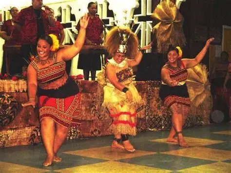
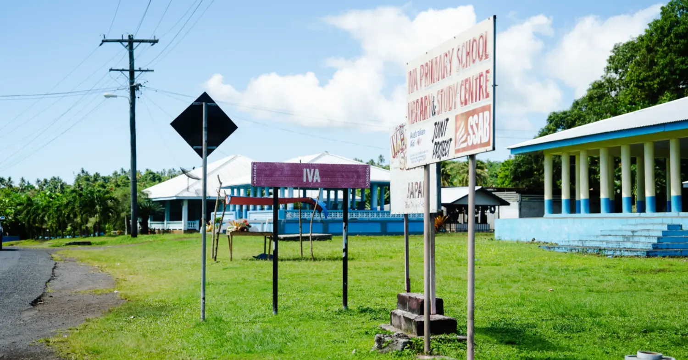
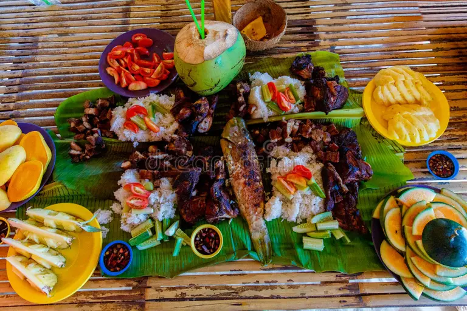

Traditional Dance
Samoan dance is an important form of cultural expression. Movements, music, and storytelling can communicate history, identity, and community values.
Explore traditions that continue to connect Samoan communities with their history and identity.

Samoan dance is an important form of cultural expression. Movements, music, and storytelling can communicate history, identity, and community values.

Villages are important places for community life. People often work together and participate in activities that support their families and communities.

Sharing food is an important part of many Samoan gatherings. Meals can bring families and communities together for celebrations and special occasions.
Fa'a Samoa means "the Samoan way." It describes the values, relationships, responsibilities, and traditions that are important to Samoan life.